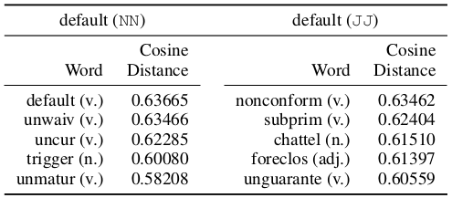

Financial Keyword Expansion via Continuous Word Vector Representations
"What" part of the paper
There is a predefined set of words which defines sentiments in financial domain. This set of keyword is expanded using the similarity between word vector. Further this expanded size of keyword is used for risk(volatility) prediction task which proves that the new set of expanded keyword is better.
"How" part of the paper
There is general purpose sentiment lexicons which can be used for sentiment analysis. Rather than using this general set of words Financial Sentiment Lexicons are used to better adapt to the domain. It consists 6 word list provided by Loughran and McDonald, 2011(reference given in original paper). The six lists are negative (Fin-Neg), positive (Fin-Pos), uncertainty (Fin-Unc), litigious (Fin-Lit), strong modal words (MW-Strong), and weak modal words (MW-Weak).
There are in all 3,911 keywords falling in these categories which is used as seed to expand the list of keywords.
Annual reports are used to learn the word embeddings of the words. Simple Keyword Expansion is used in which, these learnt word vectors are used. The list of financial sentiment keywords are taken and cosine similarity is calculated. Top-n similar words for each word is choosen to expand the list of keywords.
Keyword Expansion with Syntactic Information is another method for keyword expansion where POS tagging is first done on the text corpora(annual reports). Word embedding is learnt after that. Then the words in the sentiment lexicon with 4 major POS tags(i.e. JJ, NN, VB, RB) are used as seeds to expand. The rest is similar as above method. Intuition is that word with different POS tag may result in different top-n similar words.
Table shows top-5 similar words of "default" with different POS tags.
These new set of keyword was used to predict the volatility (Regression) where Support Vector Regression was used. Also another similar ranking task was done to rank companies based on how risky they are. This is just by splitting volatility into 5 risk levels. Ranking SVM was used for this task.
To create the input feature, term weighting scores were used. Three features were calculated for each term in set of expanded keywords, TF, TF-IDF and LOG1P.
TF is normalized term frequency with the document length. TF-IDF is also the same TF score times IDF score. And LOG1P(t, d) = log(1 + TermCount(t, d))